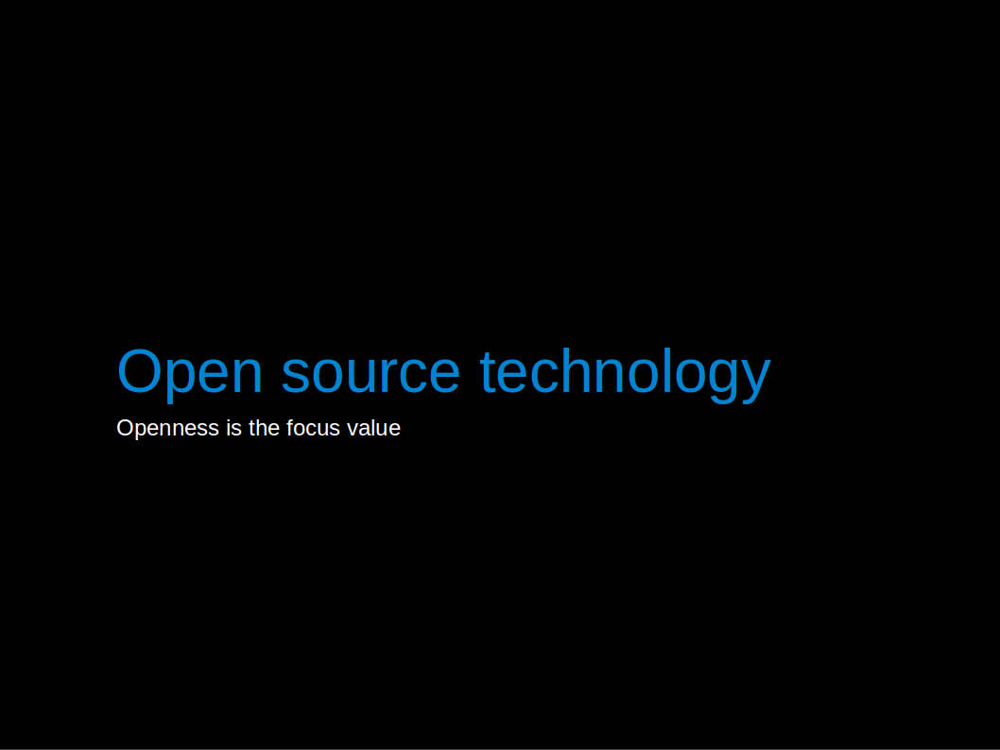

Open source sustainable technology
We love open source and believe it is a better way of doing things. This page explores what it means to us and how the value of openness informs this project.
|
In open source technology Openness is the focus value |
 |
| Practically, open source means opening the designs, CAD, drawings, source code for a technology. |
|
|
And the result of this simple action gives rise to whole range of important benefits. From learning, the empowerment that comes from learning, the ability to build upon others work, the resultant innovation. Collaboration and community. Openness actually recognises the nature of innovation as building upon others' work, it frees us to attribute others work fully and to collaborate when the opportunity arises. It is a better way of doing things because it is a way in which we can all get involved in developing and making technology, creating technology that helps us live our lives better. |
|
|
Another value based technology movement is the sustainable technology movement where environmental sustainability and often more specifically low carbon is the focus value. Like open source, low carbon or sustainable technology has a strong single value which provides a clear way of assessing whether a particular technology is better or worse. |
|
|
Taking the open source approach to sustainable technology gives us the best of both worlds. In this project we are developing a fully open source hardware and software energy monitoring platform which is one of the fundamental technologies needed in the open source sustainable technology ecosystem. |
{kind=link}
{kind=link}
{kind=link}
{kind=link}
{kind=link}
Read more
The Open Source Sustainable Technology ecosystem
Including projects that may not be explicitly about sustainability but are never the less key projects in the open source hardware movement, project that underpin developments in open source sustainable technology.
CoreArduino - the project that laid the key foundation to the open hardware movement? The Arduino microcontroller platform can now be found at the heart of almost all open hardware projects including this project. Jeelabs - A lot of our hardware and firmware is built upon the work of Jean Claud Wippler of jeelabs. The EtherShield library and the use of rfm12 wireless transceiver in particular. Jeelabs hardware and software is in turn, built upon the Arduino platform.
|
Sustainability
|
Manufacturing / Production
|
Transportation |
Open Projects, Kits and Learning
|
{kind=link}
Foundations
Open Source Hardware Association
Free Software Foundation - supporting and working towards software freedom.
Open Source Initiative - formed to educate about and advocate for the benefits of open source and to build bridges among different constituencies in the open-source community.
To quote Richard Stallman who launched the GNU Project to create a free Unix-like operating system in 1983, which was also the beginning of the free software movement and has since grown to considerable success with free and open source software running most of the internet and now inspiring and spilling over into the world of atoms of open hardware. it really sums up the importance of free and open source technology:
"...but something that humanity could tremendously benefit from knowing, I mustn’t withhold. You see, the purpose of science and technology is to develop useful information for humanity to help people live their lives better. If we promise to withhold that information–if we keep it secret–then we are betraying the mission of our field. And this, I decided, I shouldnt do." - Richard Stallman
Following the principles of the Free Software Movement the software source code and hardware designs for this project are available at no cost to everyone under the GNU General Public License.